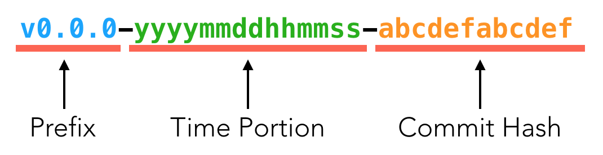
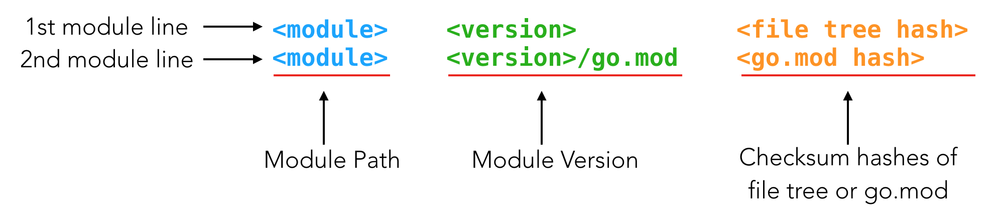

on
18 Essential Go Module tidbits for a newbie
In 2018, Go 1.11 was released and with it came Go module support. Since then many Go developers have created, used, and published modules. Creating a module is pretty easy, but figuring out how to version your module, manage its dependencies and understanding what all the numbers and words in go.mod and go.sum files mean can be confusing. In this article, I’ll walk you through 18 tidbits that will make creating and managing your Go modules easier.
In this article
⌲ 1. So what’s a module anyway?
⌲ 2. Go versions that support modules
⌲ 3. Enabling modules on the go command
⌲ 4. SemVer
⌲ 5. Module structure
⌲ 6. Creating a new module
⌲ 7. The go.mod file
⌲ 8. The types of dependencies in the go.mod file
⌲ 9. Module queries
⌲ 10. The go.sum file
⌲ 11. Adding dependencies to your module
⌲ 12. How the go command interacts with modules
⌲ 13. Semantic import versioning
⌲ 14. Versioning and releasing your module
⌲ 15. Vendoring
⌲ 16. Tips on migrating non-module projects to modules
⌲ 17. The go mod command
⌲ 18. Private modules
1. So what’s a module anyway?
Packages, modules, and repositories are all ways Go source code is managed and distributed but how do you distinguish them from one another? Here’s the difference:
⌲ A package is a collection of one or more Go source (.go extension) files that reside in one directory.
⌲ A module is a collection of one or more packages and has a version associated with it.
⌲ A repository is a collection of one or more modules, at least in the context of Go modules.
Now that we’ve cleared that up, let’s examine the benefits of using modules that a package and repository don’t provide.
- They facilitate reproducible builds. This means that if you build your Go code given a set of constant conditions such as dependencies among other things, you can reproduce that same build the next day with the same code and conditions.
- A module manages your dependencies and eliminates the need to use external vendor tools like glide, dep, govendor, etc.
- A module allows you to write code outside the GOPATH.
2. Go versions that support modules
As mentioned above, module support came with the release of Go 1.11. All Go 1.11+ versions continue to improve upon and add more features to module support.
However, if you’re still using Go versions earlier than 1.11, it’s still possible to use modules as dependencies in your codebase. Using version 0 and 1 module dependencies is uncomplicated. It’s more complex using version 2+ module dependencies with these later versions. So updates were made to Go versions 1.9.7+, 1.10.3+ and 1.11 to allow codebases using those versions to rely on v2+ module dependencies. For that reason, no changes have to be made to existing code to support module dependencies in these kinds of projects. This only works if modules are disabled for these kinds of codebases. This feature is known as minimal module compatibility.
3. Enabling modules on the go command
To enable Go modules in your codebase, you need to be running Go 1.11 or higher. Once a compatible Go version is installed, there are two ways to enables module support:
- Add a go.mod file to your project.
- Set the temporary environment variable
GO111MODULEtoon.
The GO111MODULE variable can take any of these three values:
on: use of modules is required by the go command.off: module support is disabled for the go command.auto: is the default value. Module support is enabled if a go.mod file is present within your project and is disabled if there is no go.mod file in your directory.
Depending on the value of GO111MODULE, the go command takes on two kinds of modes:
- Module-aware mode: Takes this mode when
GO111MODULEisonor onautowith a project using modules. In this mode, the go command searches for dependencies in the module cache or the vendor directory. - GOPATH mode: Takes this mode when
GO111MODULEisoffor onautowith a project not using modules. In this mode, the go command looks in the GOPATH and vendor directories for dependencies.
4. SemVer
SemVer or in full semantic versioning is the main versioning system that Go modules use. A semantic version number takes the form v major.minor.path where:
major: denotes API changes that make the current version backward-incompatible with the former version.minor: connotes the addition of backward-compatible features/functionalities to the version.path: denotes the addition of backward-compatible bug fixes.
All Go modules should be versioned as above with the addition of the prefix v e.g. v2.4.3.
5. Module structure
A module consists of and is defined by:
a. Module Path
The module path defines the location of a module. It can be derived from VCS (like Git) metadata by the go command or set explicitly by the creator of the module.
b. Module Root
The module root corresponds to the module path. It is the directory in which your Go module exists. It is the root directory in which the go.mod and go.sum files are located and contains a tree of Go source files.
c. go.mod
go.mod is a file that is located within your module root. It is automatically created when a module is initialized using the Go command and is auto-populated with:
- the module path
- the version of your module
- the version of Go your module is using
- required dependencies
- replacement dependencies
- excluded dependencies
d. go.sum
The go.sum file is used to authenticate your dependencies to ensure that no unexpected changes were introduced to them. This guarantees that builds are repeatable i.e. given the same source code and versioned dependencies (and other constant factors), consecutive builds will result in the same build all the time.
The go command creates cryptographic checksums of a module’s dependencies and go.mod files. It then stores them in the go.sum file. You can read more about the contents of a go.sum file at tidbit 10.
e. Source packages
A module, in essence, is just a collection of Go packages. All other features of modules like versioning and dependency management exist to facilitate the building of these packages and their consumption.
f. Dependencies
Dependencies are the set of all modules that are required to build and test the main module (module in which go command is run).
g. Build List
A build list is the set of the main module and all its required dependencies that provide packages to a build of the main module. A build list is the result of the go command converting the go.mod file to a list of specific modules when it builds the main module. Only specific versions of dependencies are used. If multiple versions of a dependency exist, then the go command only adds the most recent version of it to the build list.
6. Creating a new module
To create a new module, you need to decide what the module path and module root are going to be. Your module’s path will depend on where your module is in relation to the GOPATH or if you’re using a VCS. You also need to consider what the version of your module will be as it affects the path of your module. Note that where you run the below commands to create your module is where your module will reside (module root).
a. If your module will be located within GOPATH, all you have to do is:
go mod init
The go command will infer the module path using VCS metadata. For example, if your module is located at $GOPATH/src/github.com/x/y then your module’s path will be github.com/x/y.
b. If your module is located outside of GOPATH, and you already have a repo initialized for it, the same approach as (a) above will work.
c. If your module is located outside of GOPATH and has no repo initialized for it or if you would like to overwrite its inferred module path, you’ll need to provide a path.
go mod init [path]
If your module is v2+ you will need to edit its path in the go.mod file to reflect the version. This is because of Semantic Import Versioning that is touched on at tidbit 13.
7. The go.mod file
The go.mod file describes the path of a module, the version of Go the module is using and the dependencies of the module. The five verbs used in go.mod directives are:
a. module: describes the path of the module and its version.
b. go: used to set the version of Go used when compiling the module. The resulting directive does not affect build tags.
c. require: specifies a dependency of a precise version that is required by the module.
d. replace: used to replace one version of a dependency with another dependency eg. replace buggy/dependency v1.3.6 => stable/dependency/v2 v2.9.4.
e. exclude: used to omit a particular version of a dependency from use.
Here’s an example of how these verbs are used in a go.mod file:
module my/module/v2
go 1.13
require additional/dependency/v4 v4.7.3
require another/dependency v1.5.3
exclude outdated/dependency v3.4.1
The go command creates the go.mod file when a module is initialized. It then populates it with the latest versions of dependencies referenced in your source code. These dependencies can also come from a list created by a dependency management tool like godep. At least 7 other dependency management tools are supported.
This file can be modified by the go mod command but other go commands like go build, go test, etc. can add to the file but never remove from it. go.mod is line-oriented and each line should feature a directive unless creating blocks from adjacent lines with the same verb. For example:
require(
additional/dependency/v4 v4.7.3
another/dependency v1.5.3
)
Comments can be written on the go.mod file but only single-line comments with \\ can be used. Multiline comments with \**\ cannot be used.
8. The types of dependencies in the go.mod file
In the go.mod file, different kinds of dependencies are listed differently depending on how they relate to the module. These are:
a.Direct Dependencies
These are dependencies that are directly imported by the current module. They are unmarked in the go.mod file.
b. Indirect Dependencies
These are unlisted dependencies of the direct dependencies. Some dependencies won’t list their dependencies. So the main module has to list them instead. Indirect dependencies are marked in the go.mod with an //indirect comment adjacent to its listing. Some indirect dependencies are listed when a direct dependency’s dependencies are upgraded because this goes against its stated requirements. This is what an indirect dependency line would look like in a go.mod file:
require indirect/dependency/v3 v3.3.1 //indirect
9. Module queries
A module query is a request for a module at a precise or condition-matching version. It can be requested using the go command or on the go.mod file. The version requested corresponds to some stated conditions or could be an exact version. If no exact version is requested, the go command translates the module query into specific module versions then updates the go.mod file with the results.
The two primary reasons module queries are used are:
- Some dependencies do not have SemVer tags. It could be that the dependency has not been tagged at any point in time or a change introduced by a commit has not been tagged but needs to be used.
- Module developers may require some flexibility when defining what dependencies to use in their builds. Stating a specific version for a dependency does not provide this flexibility.
It’s important to note that when using module queries release versions are given priority over pre-release versions. The four types of module queries are pseudo-versions, semantic versions, strings, and revision identifiers.
a. Pseudo-versions
Some dependencies have no SemVer tags associated with them. Newly committed changes that have not yet been tagged may sometimes be required before an actual tagged release is published. To reference an untagged dependency, a pseudo-version is created for it. Pseudo-versions are defined by three parts:
i. A prefix: This is usually v0.0.0 when no tags whatsoever have been created for the dependency. However, in cases where there are tags associated with the dependency but you’d like to use newly committed changes outside the most recent tagged version, the prefix would be the most recent tagged version before the change. For example, if you have a dependency with the most recent tagged version being v5.9.2 but would like to use a version with later untagged committed changes, then v5.9.2 would be the prefix.
ii. A time portion: this is the timestamp of when the pseudo-version was created and is used to compare two pseudo-versions to determine which is the most recent.
iii. A commit hash: this is the underlying commit that marks the changes in the dependency that you’d like to use.
Here’s an illustration of what a pseudo-version looks like:

Pseudo-versions come in 3 forms:
- A dependency with absolutely no tags. Example,
v0.0.0-yyyymmddhhmmss-abcdefabcdef - A dependency with its most recent tag being a fully-specified semantic version. Example,
vX.Y.Z-yyyymmddhhmmss-abcdefabcdef - A dependency with its most recent tag being a fully-specified pre-release candidate semantic version. Example,
vX.Y.Z-pre.0-yyyymmddhhmmss-abcdefabcdef
b. Semantic versions
Semantic versions as covered in tidbit 4 can provide flexibility when you’d like to receive patches or features as soon as they are made available. Types of SemVer module queries include:
- Fully specified semantic version like
v4.5.8which resolves to a specific version of a dependency. - Semantic prefixes which can include just the major version or a major and minor version. For example,
v8orv7.3. - Semantic version comparisons resolve to the closest version to a comparison target. The four operators than can be used include
>,>=,<and<=. Examples of these versions are<4.6.1,>=7.9.1etc. These do not work withgo get.
c. Strings
These include:
latestwhich corresponds to a repository’s latest untagged revision (if no tags exist) or the latest available tagged version.upgradewhich corresponds to a version later thanlatest. This can include pre-release revisions, for example.patchwhich corresponds to the latest tagged version of a dependency with the same major and minor version.
d. Revision identifiers
These include:
- commit hash prefixes (8 to 12 first characters of a commit hash are adequate for most repositories).
- revision tags that are not SemVer compliant eg.
3.0-beta6. - branch names.
If a revision identifier matches another query syntax then that syntax is given priority over it.
Examples of module queries in a go.mod file:
require(
github.com/a/b v1.5.8
github.com/c/d/v3 v3
github.com/e/f v1.8
github.com/g/h/v7 <v1.6.0
github.com/i/j latest
github.com/k/l upgrade
github.com/m/n patch
github.com/o/p 5ce8005990f77d06
github.com/q/r 3.0-beta6
github.com/s/t staging
)
Examples of module queries used with the go get command:
go get github.com/a/b@v1.5.8
go get github.com/c/d@v3
go get github.com/e/f@v1.8
go get github.com/i/j@latest
go get github.com/k/l@upgrade
go get github.com/m/n@patch
go get github.com/o/p@5ce8005990f77d06
go get github.com/q/r@3.0-beta6
go get github.com/s/t@staging
10. The go.sum file
The purpose of the go.sum file is to help the go command authenticate a module’s dependencies. It helps ensure that the source code of a dependency remains the same for a specified version. This is important because:
a. it ensures that builds are repeatable.
b. no malicious or accidental changes have been added to the dependencies.
The go.sum stores two types of cryptographic checksums for each dependency:
a. A checksum of the dependency file tree (source code files).
b. A checksum of the dependency’s go.mod file, if it has opted into module use. If the dependency is not a module, then this is not generated. This checksum is needed when generating the dependency graph (list of dependencies required to build the main module).
So for each dependency, two lines are added to the go.sum file unless the dependency is not a module. Otherwise, only one line is added. Here’s what it looks like:

The go.sum file resides with the go.mod file at the module root. Unlike the go.mod file which is generated when a module is initialized, the go.sum file is generated when the module is built for the first time.
11. Adding dependencies to your module
You can add dependencies to your module in these ways:
a. Adding your dependency to your source code. The go command automatically determines what requirements are requested in your source code but are missing. It then adds them to the go.mod and downloads them when the main module is built.
b. A dependency can also be added to your module’s go.mod using go get on the command line.
c. Test dependencies are added to the module’s go.mod when running go test.
d. Several other go commands scan your source code for missing requirements then add them to your go.mod when running. Commands like these include go list etc. More about this is touched on at tidbit 12.
e. Use go mod download to add a module dependency to your local cache before you reference it to your source code.
By default, module dependencies are stored in GOPATH/pkg/mod but if you opt to vend your dependencies, they are stored in a vendor directory at the module root.
12. How the go command interacts with modules
The various go commands interact with modules in different ways. Here’s a general categorization of how they behave in relation to modules:
i. Some go commands when run, search through the source code and add missing build dependencies to the go.mod file and download them to the local cache or vendor directory. They, however, do not remove unused dependencies or delete anything from the go.mod or go.sum. These commands are: go build, go clean, go fix, go fmt, go generate, go get, go install, go list, and go run.
ii. Other go commands not only add missing build dependencies but also add missing test dependencies to the go.mod, the go.sum, and the local cache or vendor directory. These commands are go test and go vet. They do not remove any unused dependencies if they happen upon them.
iii. The go mod command was created for module operations. Out of the eight go mod operations only three directly add missing module dependencies to the local cache/vendor directory when run. These are go mod tidy, go mod vendor, and go mod why. go mod download adds dependencies to the local cache when specifically requested.
13. Semantic Import Versioning
Go 1.11+ module versions adhere to semantic import versioning. Semantic import versioning involves versioning a module following SemVer and the import compatibility rule. You can read up on Semver at tidbit 4. The import compatibility rule states that:
If an old package and a new package have the same import path, the new package must be backward compatible with the old package.
So according to the import compatibility rule, if any compatibility breaking changes are introduced to your package, the package’s import path should change. The change in import path is accomplished by adding the major version of the module to which the package belongs to the module path. However, this only applies to releases that have opted into the use of modules.
Releases that use modules follow 3 rules to comply with semantic import versioning. These are:
a. Adhere to SemVer.
b. v0 and v1 releases should not include their major version numbers in their module and import paths. v0 releases omit v0 because these versions are considered to be initial, unstable and still under development as progress is made towards v1. v1 releases just omit v1 by default.
c. v2+ releases should include their major version numbers in their module and import paths. This is required by the go command to preserve import compatibility as mentioned above.
Below are some examples:
| Version | Major Version | Module Path | Import Path |
|---|---|---|---|
| v0.4.2 | v0 |
github.com/a/module |
github.com/a/module/package |
| v1.3.9 | v1 |
github.com/a/module |
github.com/a/module/package |
| v2.8.3 | v2 |
github.com/a/module/v2 |
github.com/a/module/v2/package |
| v5.6.1 | v5 |
github.com/a/module/v5 |
github.com/a/module/v5/package |
| v9.4.5 | v9 |
github.com/a/module/v9 |
github.com/a/module/v9/package |
| v13.5.6 | v13 |
github.com/a/module/v13 |
github.com/a/module/v13/package |
There are 2 exceptions to this rule which in time will be unnecessary as more projects adopt the use of modules. These are:
- Projects using gopkg.in. gopkg.in is an earlier versioning system. It concatenated a package’s import path to its major version using a period.
- Projects that have not opted in to the use of modules yet.
There are some benefits to semantic import versioning:
- It prevents the diamond dependency import problem..
- It’s possible to use two versions of a module with different major version numbers within the same codebase.
- It helps package developers easily identify dependencies early that may be problematic to work with in the future. This is because using v0, pre-release, incompatible or pseudo versions does not guarantee backward compatibility.
14. Versioning and releasing your module
To prepare your module for versioning, you need to ensure that you’ve:
- initialized a repository for your module. Git, Mercurial, Bazaar among others are supported.
- initialized your module and have a go.mod file in your module root.
- added a license if you intend to publish your module.
If this is the first time your code is opting into module use, two things need to be considered before proceeding:
- Is your codebase new or pre-existing?
- What version would you like to initially tag your module?
If your codebase is new, creating a module is straightforward. However, if you have a pre-existing codebase and are just now opting into modules, you will need to adopt SemVer if you haven’t already. Once that’s done, increment the major version because opting into modules is considered a compatibility breaking change.
Deciding what initial version to use comes with its own set of considerations. Tagging your module as v0 means your module is still under development, is not stable and cannot guarantee backward compatibility. Tagging your module as v1+ and beyond means, your module is stable and enforces backward compatibility within each major version. Pre-release versions behave similarly to v0 modules.
After you’ve opted in to the use of modules, you will need to follow SemVer. So if you’re:
- introducing a backward-incompatible change such as an API change, deleting exported types, etc. you have to increment your major version. You also need to change import and module paths in your source code and go.mod.
- making backward-compatible changes that affect the API like adding types, methods, functions, etc. increment the minor version.
- adding changes that do not alter the API like fixing bugs, increment the patch version.
- creating a pre-release version, append a hyphen after the patch version then a series of dot separated identifiers e.g
1.0.0-alpha.7.1.
a. Versioning your V0 and V1 modules
Versioning your v0 and v1 modules is a 4-stage process:
Remove unnecessary dependencies that are not required in your build or tests.
go mod tidyTest your code.
go test ./...Tag your module with the version you’ve come up with according to the above SemVer rules. For example with git:
git tag [your version]Push your brand-new tag to your origin repository:
git push origin [your tag]
b. Versioning your v2+ modules
As per the import compatibility rule, module paths for v2+ modules have a major version suffix to indicate backward incompatibility and prevent the diamond dependency hell problem. To accommodate this suffix, there are two ways to help version and tag your v2+ modules:
- The major branch method: create a new branch for every new major version
- The major subdirectory method: create a new directory in the module root for every new major version
The major subdirectory method is preferred over the major branch method because:
- with the subdirectory method, tools that are module-unaware can work with different versions of a module. With branches, it gets tricky since these tools are not module aware and can pull from master which may be a different version than requested.
- with the branch method, module-unaware tools have a hard time working with module paths and it’s difficult to locate files associated with those file paths.
- makes migration to other versions of a dependency easier in non-module codebases. Large non-module codebases can depend on multiple versions of the same dependency when doing phased migrations to newer versions with the major subdirectory method.
Major branch method
Create a new branch based off of the most recent version of your module. Make it your current operating branch. Name it the next major version you’d like to create eg.
v2.git branch v2 git checkout v2In your go.mod file, change the suffix of your module path to reflect the new version in the module directive. For example, when moving from v1 to v2,
module github.com/user/modulewould change tomodule github.com/user/module/v2.go mod edit -module github.com/user/module/v2 go.modUpdate import paths in your source code to reflect the change in your module path eg.
github.com/user/module/packagein v1 would change togithub.com/user/module/v2/packagein v2. You could use your editor for this step or find and sed on the command line if you’d prefer.Tidy your dependencies.
go mod tidyTest your code.
go test ./...Tag your module. To make sure all changes made are stable, it’s recommended to first create a pre-release version as some instability is understandable with pre-releases. Once all new changes have been tested and found to be stable, you could tag the next stable release.
git tag [tag]Push your new branch and tag.
git push origin [branch] git push origin [tag]
Major subdirectory method
Navigate to the module root when creating a v2 or the parent directory that hosts all other versions for v3+. Create a new directory. Name it the next major version you’d like to create eg.
v3.mkdir v3Copy all your source code and the go.mod from the previous version into the new directory you created.
cp *.go v3/ cp go.mod v3/go.modChange your current directory to the one you just created. On the go.mod file, change the suffix of your module path to reflect the new version. For example:
go mod edit -module github.com/user/module/v3 go.modUpdate import paths in your source code to reflect the change in your module path eg.
github.com/user/module/packagein v1 would change togithub.com/user/module/v2/packagein v2. You could use your editor for this step or find and sed on the command line if you’d prefer.Tidy your dependencies.
go mod tidyTest your code.
go test ./...Tag your module. To make sure all changes made are stable, it’s recommended to first create a pre-release version as some instability is understandable with pre-releases. Once all new changes have been tested and found to be stable, you could tag the next stable release.
git tag [tag]Push your tag.
git push origin [tag]
Some best practices to follow when versioning and releasing your v2+ modules:
- Always consider your module’s users before deciding to break compatibility. It’s additional work for your users to adopt changes you make to your codebase.
- Consider the maintainers of your codebase since it’s also more work for them to constantly maintain new and older versions of your dependency.
- Continually maintain your module to keep its consumers from using outdated code.
- Always have a good reason to make breaking changes to justify reasons 1 through 3.
15. Vendoring
Vendoring is the process of fetching packages that your codebase depends on and storing them usually in the codebase directory. In Go, vendored packages are stored in the vendor directory at the module root. However by default, when using modules the vendor directory is ignored by the go command. To vendor dependencies for your module, you run:
go mod vendor
This will create a vendor directory in your module root with all your dependencies stored in them.
When using the go command with your module, pass the -mod=vendor flag to it if you would like the command to use dependencies from the vendor directory.
16. Tips on migrating non-module projects to modules
When migrating your non-module project to a module, it’s important to consider two things:
- Users of the project
- Maintainers of the project
Tips for maintainers:
- You could migrate your projects using either the major subdirectory or the major branch strategy.
- When initially migrating your project to modules, increment your major version since it’s considered a breaking change. Because of the import compatibility rule, the new major version is added to the module path and this means you also have to modify your codebase’s import paths as well.
- To migrate your dependencies, just run
go mod initas this will auto-populate the dependencies in the go.mod file. You will need to modify the import paths for v2+ module dependencies within the codebase and in the go.mod.
Tips for handling users’ needs:
- Encourage users to import packages directly in code as this is easier than using
go get. The go command automatically adds new imports to go.mod as dependencies. - Have options for your non-module users who may want to consume your module. If your module is in v2+, you can go one of two ways: the major subdirectory strategy which is good for most Go versions or the major branch strategy which works for Go 1.9.7+, 1.10.3+, and 1.11+ codebases. Non-module users have very few problems using v0 and v1 module dependencies so there’s not much to worry about if your module is in v0 or v1.
- Your users can use multiple versions of your module in their codebase. This is especially helpful if your users are slowly migrating dependencies in a large codebase or to fill deficiencies between different versions of your module.
17. The go mod command
The go mod command is used to perform operations on modules. The eight go mod commands are:
| Command | Operation | Usage |
|---|---|---|
download |
Downloads a module to local cache (GOPATH/pkg/mod/cache). A specific module version can be requested using the query path@version. This is mostly used when you’d like to preload dependencies. To get a more detailed overview of the module you are downloading use the -json flag. |
go mod download [flags] [path]@[version]... |
edit |
Used to edit a go.mod file. It reads the go.mod file then writes changes to the same file or another specified file. It is mostly useful for tools or scripts. The command does not do any module lookup so determining any errors related to the modified file contents is up to you. With this command, you can: - format the go.mod ( -fmt)- change the module path ( -module newPath)- require a dependency ( -require=path@version)- drop a required dependency ( -droprequire=path@version)- replace a dependency with another different dependency ( -replace oldpath@version=newpath@version)- drop a replacement dependency ( -dropreplace=module@version)- exclude a dependency ( -exclude=path@version)- drop an excluded dependency( -dropexclude=path@version)- change the Go version ( -go=version)- print the modified contents of the go.mod without writing the results back to the source go.mod ( -print)- print the modified contents of the go.mod in a JSON format without writing the results back to the source go.mod ( -json) |
go mod edit [flags] [target go.mod] |
graph |
prints a text version of the module requirement graph which is a list of your module’s direct and indirect dependencies. | go mod graph |
init |
initializes a new module by creating a go.mod and populating it with the module path, a Go version, and a list of dependencies. If you are outside GOPATH or not within a repository you need to provide a module path as it’s not possible to infer one and this operation will fail without it. The resulting go.mod is written to the current directory. | go mod init [module path] |
tidy |
determines missing and unused module dependencies then adds or removes them from your go.mod and go.sum. Use the -v flag for a detailed overview of this command’s results. |
go mod tidy [-v] |
vendor |
adds your module’s build and test dependencies to a vendor directory. Use the -v flag for a detailed overview of this command’s results. |
go mod vendor [-v] |
verify |
checks that the module’s dependencies in the source cache have not been modified since being downloaded. | go mod verify |
why |
shows how and where packages or modules are needed in your main module. It does this by showing you the shortest path in your module’s dependency graph between your module and a specified package or module. By default, the arguments are considered to be packages. If you use the -m flag, they are considered to be modules. The -vendor flag excludes test dependencies from the results. |
go mod why [-m] [-vendor] packages... |
18. Private Modules
To host private modules it’s important to first know and understand the services that help the go command fetch modules. The Go Team introduced three free public services in 2019 that make it easier to fetch and work with module dependencies. These include:
1. The Module Mirror
It is served at proxy.golang.org. It is a proxy that caches Go module source code and metadata in its storage system. The module mirror is used by default by the Go command as of Go 1.13. Some core reasons to have the module mirror include:
- To cater to the specific needs of the go command. The go command needs to fetch very precise metadata or source code at a time. For example, fetching a list of available versions of a module, metadata on a distinct version, the go.mod file for one exact version, source code for a precise version, etc. But with source control services, getting this kind of individual information is not possible.
- To reduce latency when fetching modules. When trying to resolve the version of a dependency that does not have a fully specified semantic versioned tag, the go command may have to pull down a whole repository from a source control server. This is slower. The module mirror allows the go command to pull only distinct metadata and source code in such cases making it faster to resolve these kinds of dependencies.
- To reduce storage on developers’ systems since only specific source code and metadata is fetched by the go command.
- Provides source code that is unavailable from its primary location, for example in cases where a module has been mistakenly deleted or maliciously taken down.
2. The Checksum Database
It is served at sum.golang.org. It is a global tamper-proof database that hosts go.sum lines (SHA-256 hashes of the source code and go.mod files). It’s designed in a way that makes tampering easily detectable and evident. It also provides endpoints that the go command uses to fetch go.sum files and verify local go.sum files. One advantage of the checksum database is that it provides a layer of security on top of a module proxy or source control service or server that can be audited and reports instances where incorrect source code is provided.
3. The Module Index
It is served at index.golang.org. It’s a feed of newly published module versions that proxy.golang.org makes available. It’s helpful when separately caching what’s available to proxy.golang.org on your own.
When working with private modules, you can instruct the go command to not use the module mirror or checksum database. Alternatively, you could host your versions of the above services on a private server. Substitutes you could use are like Thumbai, Athens, Goproxy, and JFrog Artifactory. To change what the go command defaults to for the module mirror and checksum DB, you will need to change some or all of the below environment variables:
| Environment Variable | Purpose | Format | Example |
|---|---|---|---|
GOPRIVATE |
Controls which modules are private and cannot be accessed and validated by the public module proxy and checksum database. | Comma-separated list of glob patterns of module path prefixes | GOPRIVATE=*.privateorg.com,*.secretorg.com,somecorp.com/confidential |
GONOPROXY |
Controls which modules should not be fetched from the public module mirror. | Comma-separated list of glob patterns of module path prefixes | GONOPROXY=*.privateorg.com,*.secretorg.com,somecorp.com/confidential |
GONOSUMDB |
Controls which modules should not be validated against the public checksum database. | Comma-separated list of glob patterns of module path prefixes | GONOSUMDB=*.privateorg.com,*.secretorg.com,somecorp.com/confidential |
GOPROXY |
Controls which module mirror proxies the go command should use and in what order, or whether or not to use a module proxy. | Comma-separated list that takes any of these values: - module proxy URLs - direct for a direct connection to source control server (proxies listed after this are never consulted)- off to disallow downloading from any source. |
GOPROXY=proxy.privateorg.com,otherproxy.privateorg.com,direct |
GOSUMDB |
Controls which checksum database the go command should use or whether or not to use a checksum database. | - Name of the checksum database with an optional public key and URL - off to disallow checksum database consultation. |
GOSUMDB=sum.privateorg.com+<publickey>https://sum.privateorg.com |
Conclusion
Modules have vastly simplified dependency management in Go. It’s important to have a detailed understanding of how they work to take advantage of all the features they provide. I hope that this article provided some useful information to gophers who are new to modules.
Credits
⌲ Gophers
⌲ Icon made by Becris from www.flaticon.com